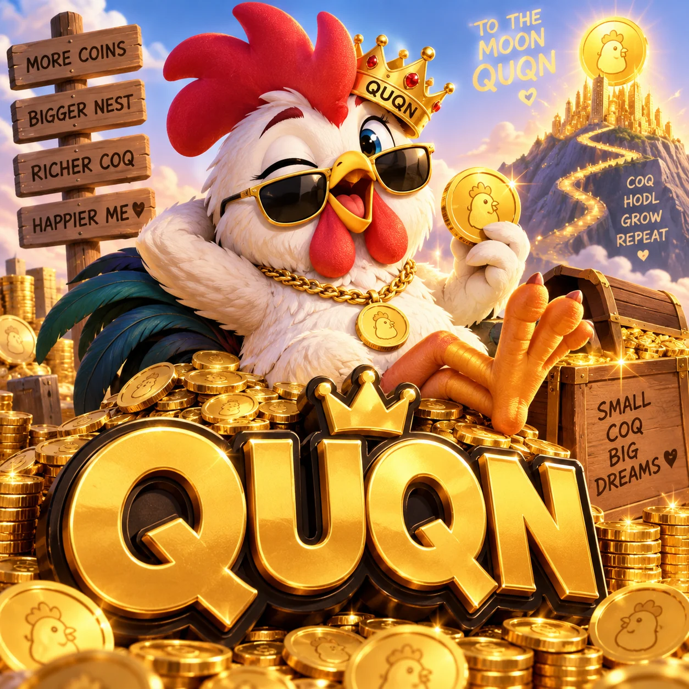

OK, NOW MEET QUQNHe started small.
He started small.
His ego did not.
QUQN was born small. His dreams were not.
He watches whales, celebrity coins and legendary memes from the edge of the farm and asks the only question that matters: ‘Why not me?’ QUQN is overconfident, impulsive, charmingly clumsy and absolutely convinced that one day the little guy gets his turn.
“Zey say ze coq cannot fly? Pfff. Today, maybe. Tomorrow... BILLIONAIRE. Euh... probably.

Euh… click ze coq.